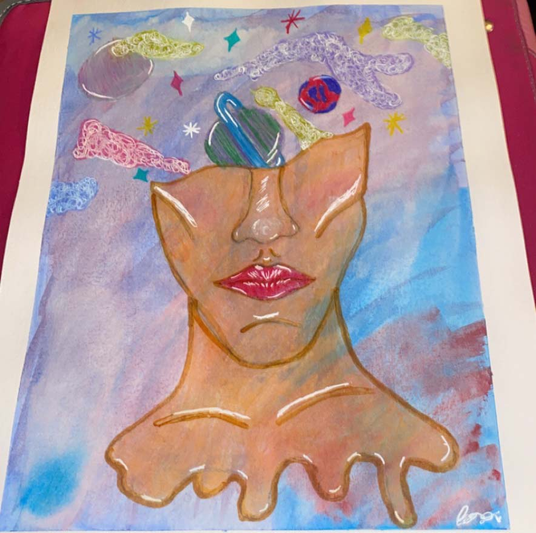
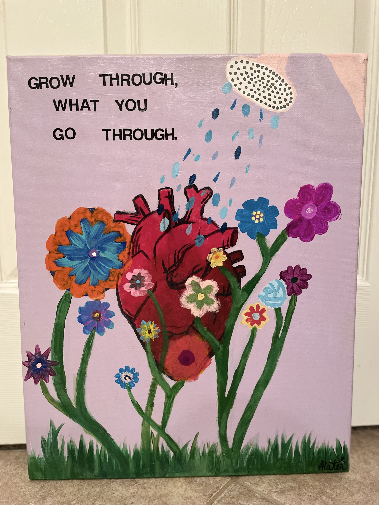

About the Artist
Hayden Chandler (aka Mater) is a high school student at Bob Jones High School in Madison, AL. She works with many different mediums to create her art. She is mostly self-taught, and is inspired by many different types of art & artists.
Ask the Artist
Who are some artists that inspire you?
A few commonly known artists that inspire me are Van Gogh, Michelangelo and Da Vinci. However, I love watching artists on TikTok take their talents and change the lives of millions who view their videos. This isn't just contained to painters and sketchers, but also makeup and SFX artists, jewelers and small businesses!
Which TikTok artists do you recommend?
These are just a few of the TikTok Artists I follow:
What is your favorite medium to use?
I love using watercolor, alcohol based markers, and mixed media; meaning using multiple mediums on one art piece.
What is your favorite piece that you've created?
My favorite piece is definietly the floral atomically correct heart because the message "grow through what you go through" speaks very deeply to me and has an extremely personal place in my heart.
Do you have any specific routine, or method you use to create a piece?
Usually when I am getting ready to start a new art piece I will go to my room put on some fun music that I can vibe to, then I look on Pinterest to get inspiration for what type of theme I am in the mood to work with and then I'm off. And the majority of the time the music can help influence the turns my art takes on its path to the final destination.
Do you plan to pursue art as a career?
Part of me wants to pursue a career in art, but my heart also has a special calling to be a teacher for those with learning disabilities or mentally delayed children.